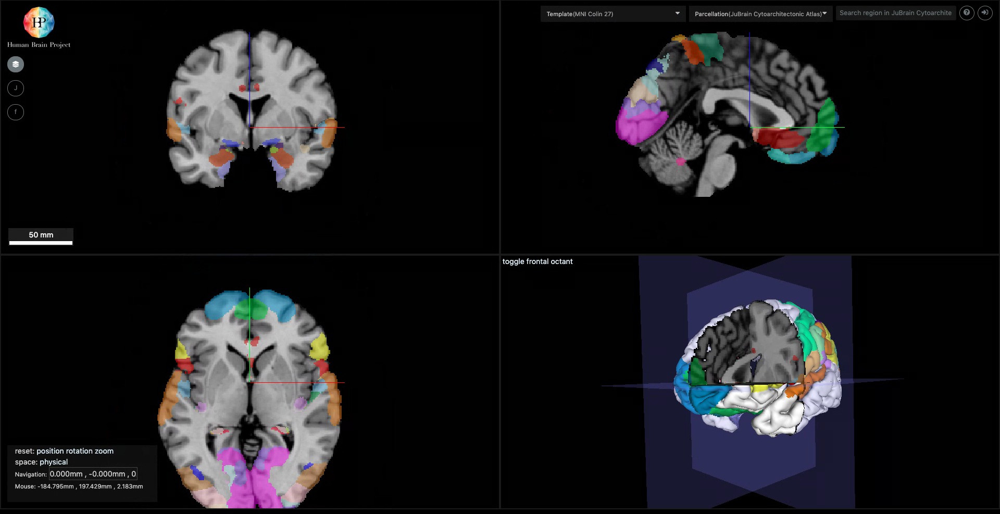

Navigation
Nehuba viewer contains with 4 main containers. 3 of them are 2D images of brain and each of them represents each dimention of 3D image.
In the forth container we can see 3D image of brain.

Position
Mouse left button + moving cursor - I user clicks to mouse left button and moves cursor,
center of picture will change according to the moving cursor. (See the gif)
 With that, You can see that camera area is moving into the different 2 - 2D images of nehuba container and camera is changing for 3D image.
With that, You can see that camera area is moving into the different 2 - 2D images of nehuba container and camera is changing for 3D image.
Scroll to zoom,
Shift and mouse click with move,
ctrl + scroll to move cameras
Navigation Panel